Plan Availability
What's In This Article?
Go to Your Volunteer Applications Page
- Make sure you are logged into Eventeny.
- At the top of the home page, hover over the "Organize" tab and select the event you wish to work with.
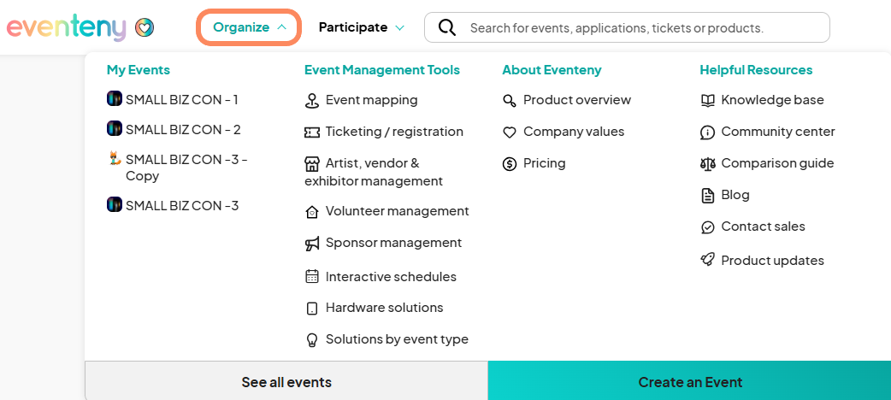
- This is your event dashboard. On the left sidebar, click the "Volunteers" tab and select the "Applications" option.
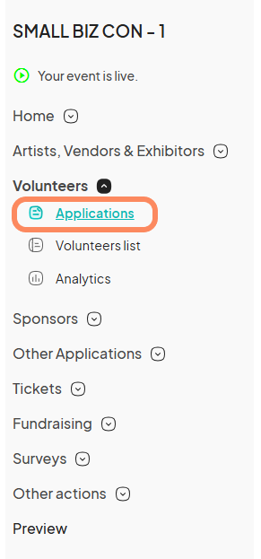
Creating a Volunteer Application - General Information
- This is your volunteer application page. To create a new application, click the blue "Add new application" button at the top right corner.
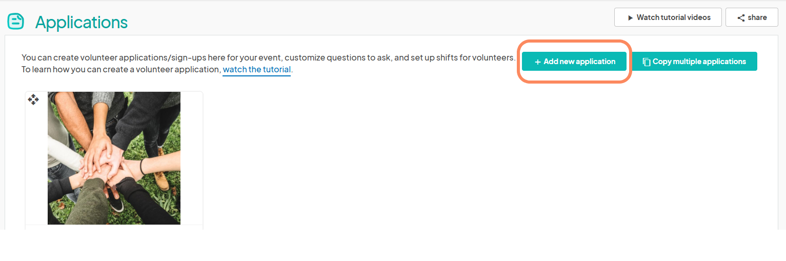
- The first step is to input the application's general information which consists of the following:
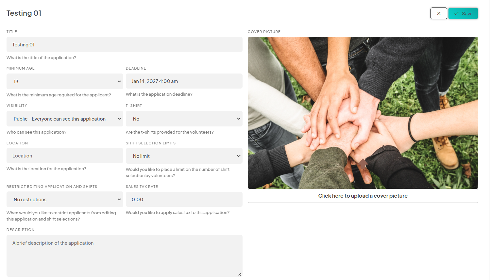
- Title: What is your application called? Who is it for?
- Minimum Age: What is the minimum age requirement to volunteer at your event?
- Deadline: What is the deadline for applying to this application?
- Visibility: Do you want this application to be accessible to the public or only through a private link?
- T-Shirt: Will you be providing uniforms to your volunteers?
- Location: Where will the volunteer be stationed at your event?
- Shift Selection Limits: How many shifts can each volunteer select per application?
- Application/Shift Restrictions: Do you want to restrict volunteer applicants from editing their applications after submission, after approval, or not at all?
- Description: This is where you put all important details and descriptors for the application.
- Terms and Conditions: This is where you put your terms and conditions for the application such as what you expect from your volunteers, for example.
-
Primary Contact: Who is the point of contact for this application?
Learn to add team members to help manage applications. -
Cover Photo: Add a nice cover photo that represents your event or application to attract potential volunteers.
When you are finished filling out the information, don't forget to click the blue "Save" button at the top right corner.
Filling Out Your Volunteer Application - Documents and Questions
- Upon saving your volunteer application, it will populate on the volunteer application page. There is still more information to include, so go ahead and click the "Edit Application" button at the bottom of the application you just created.
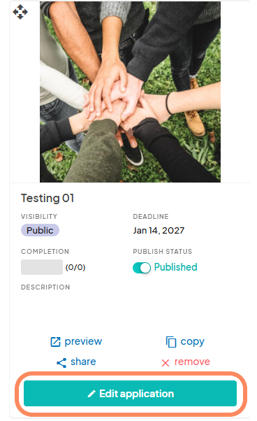
- At the top, you will find the information you entered to first create the application. To edit this information at any point, click the "✎" symbol at the top right corner. Don't forget to hit save at the same location when you are finished.
You may also notice a status toggle in the information section. This should be switched to "live" mode when you're ready for the application to be viewed. Keep it in draft mode when you are editing and adding information, such as now. This same toggle can be found on the applications page as well.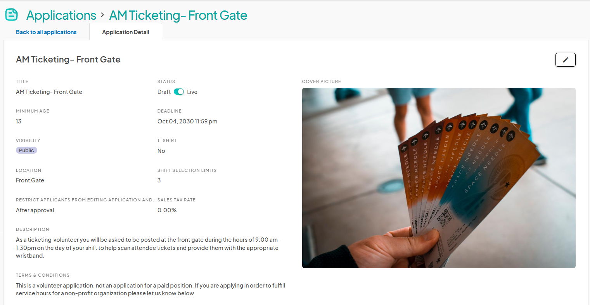
- As you scroll down, you'll find some other sections that you can (optionally) fill out. The first half is Documents and Questions.
You can upload documents using the blue "New Upload" button to the application for volunteer applicants to view and download.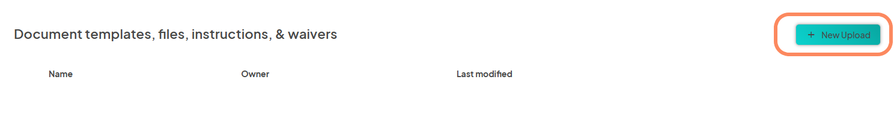
- We have created 10 questions for you that are all optional for you to include. Simply toggle the question to "blue" if you want it included. You can also create your own custom questions by clicking the blue "New Question" button.
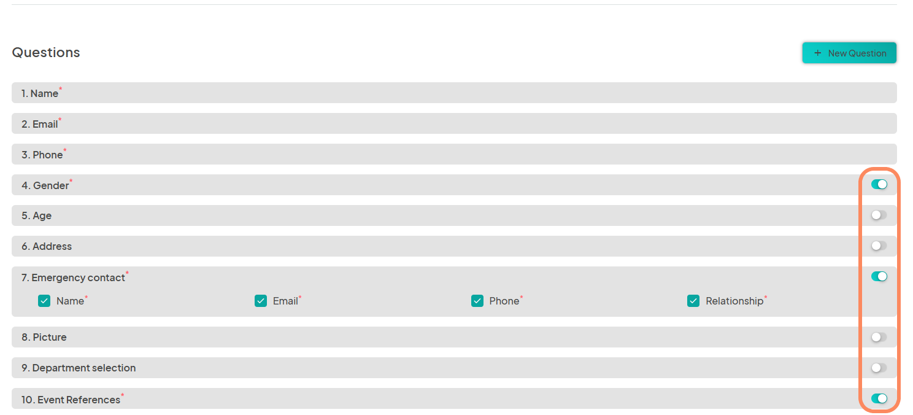
Conditional Questions
- To create a conditional question, you will need to select an Answer Type of "Multiple Choice", "Checkbox, or "Drop Down".

- Enter in your answer choices, a description, and click the "Save" button to finalize the question.
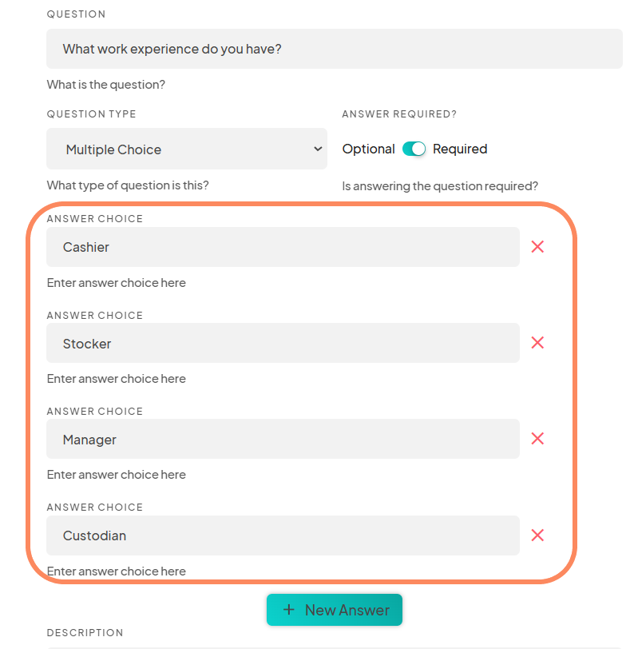
- Next, add another related question and create your answer choices by clicking on the "+New Question" button again.
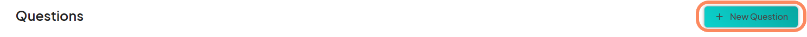
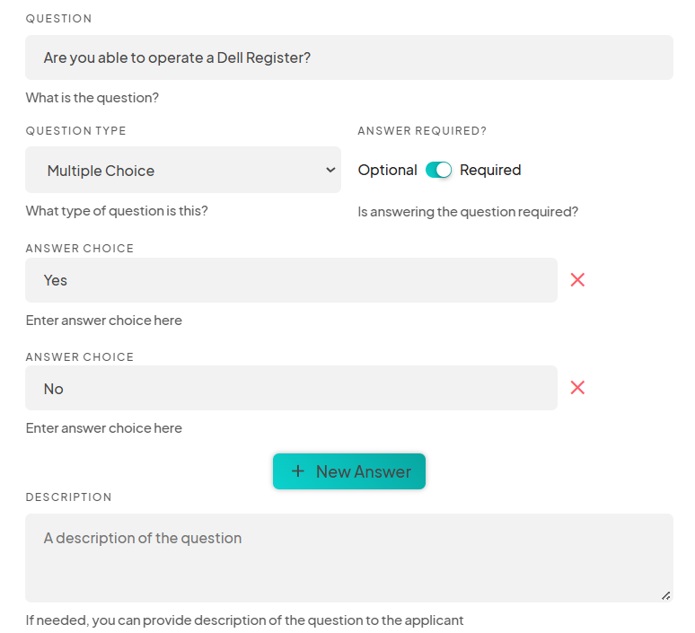
- To make the second question conditional to the first question you created, toggle the "Show Question Only If An Answer Is Selected" option for the second question.
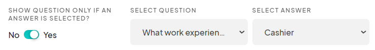
-
Select the question and answer that must be completed before the conditional question appears.
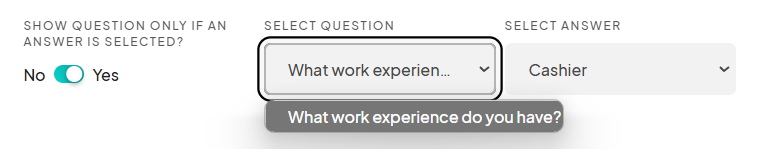
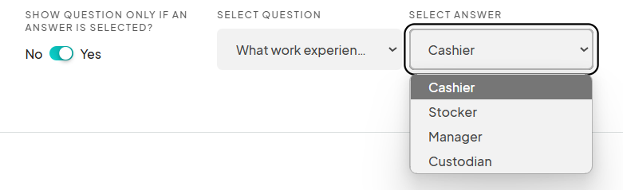
- Click the "Save" button when done.

- Once the conditional question is saved, it will display as a sub-question in the "Questions" section of your application dashboard.
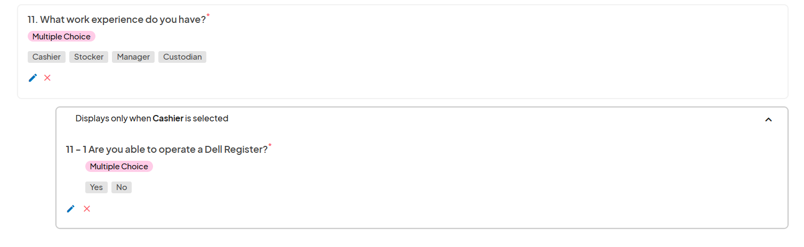
- Create more conditional questions as needed repeating the steps above.
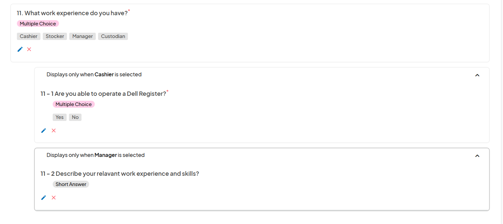
- From the applicant's perspective, selecting an answer that relates to another question will trigger the appearance of the conditional question.
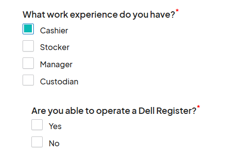
Filling Out Your Volunteer Application - Shifts
- This is where you will create shifts for your application. Creating shifts is completely customizable and unique to your application. To create a new shift, select the blue "New Shift" button.
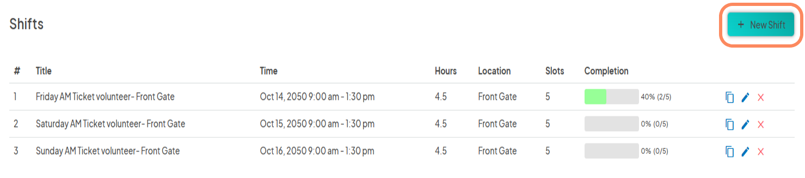
Messages
- Messages is a feature that further helps you as an event organizer automate your application process. You can create custom messages that automatically send to the volunteer if their application has been approved or rejected. No more keeping track of who was messaged and who wasn't!
To customize your approval and rejection message, click the "✎" symbol.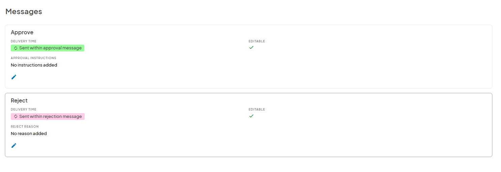
Application Options
- Back on the application page, you may notice some key terms and options located on the application itself. Let's begin with the terms at the top:
- Visibility: indicates if the application is public (everyone can see it) or private (only those with a link can see it).
- Deadline: indicates what the deadline is to apply.
- Completion: Dependent on how many shift selections there are. Indicates how many out of the shifts you created have been filled. (i.e., 5/10 shifts have been filled). When it reaches its full capacity, no more volunteers can apply unless you create more shifts.
- Publish Status: Indicates if the application is in live mode (blue toggle) or draft mode (grey toggle).
-
Description: Shows the description you wrote for the application.
- Next are the four options at the bottom:
- Preview: Allows you to view the application process as if you were a volunteer.
- Copy: Allows you to make a copy of the application.
- Share: Allows you to share the link to the application.
-
Remove: Allows you to delete the application permanently.
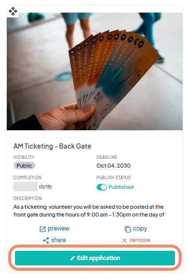
Publish Your Application
- Congratulations! You've successfully created a volunteer application. Now all there's left to do is to publish the application. As touched on before, you can do this in two different locations. The first in directly on the application page.
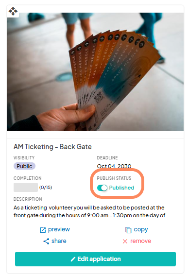
-
The second is within the application itself, when you click the "Edit Application" button.
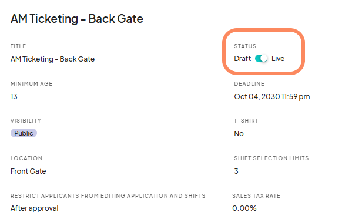
- When the toggle is blue, that means the application is "live" or "published." If it is grey, that means it is in draft mode and no one can see it; not even those with a private link!
Comments
0 comments
Please sign in to leave a comment.